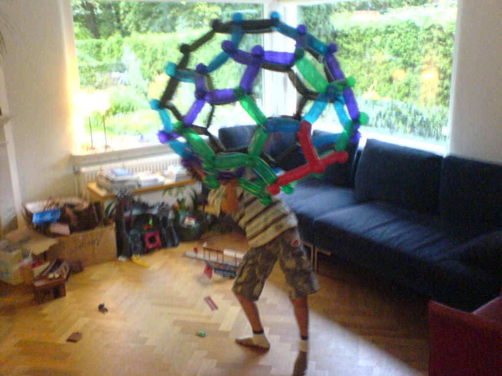
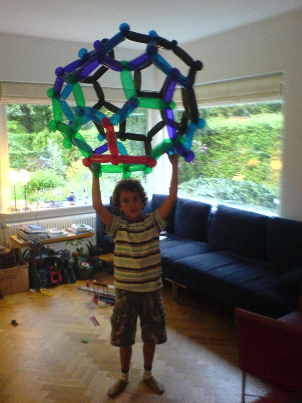
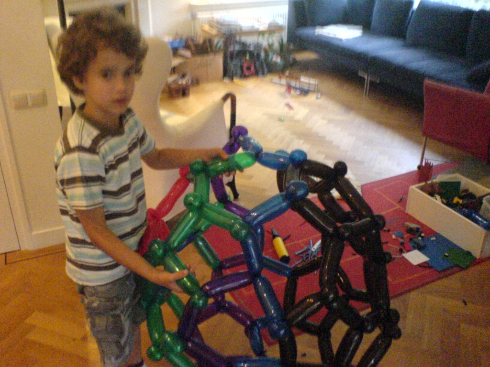
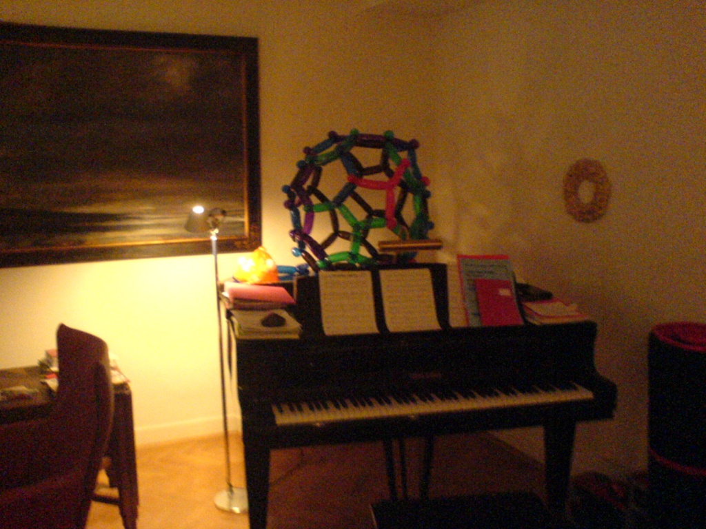
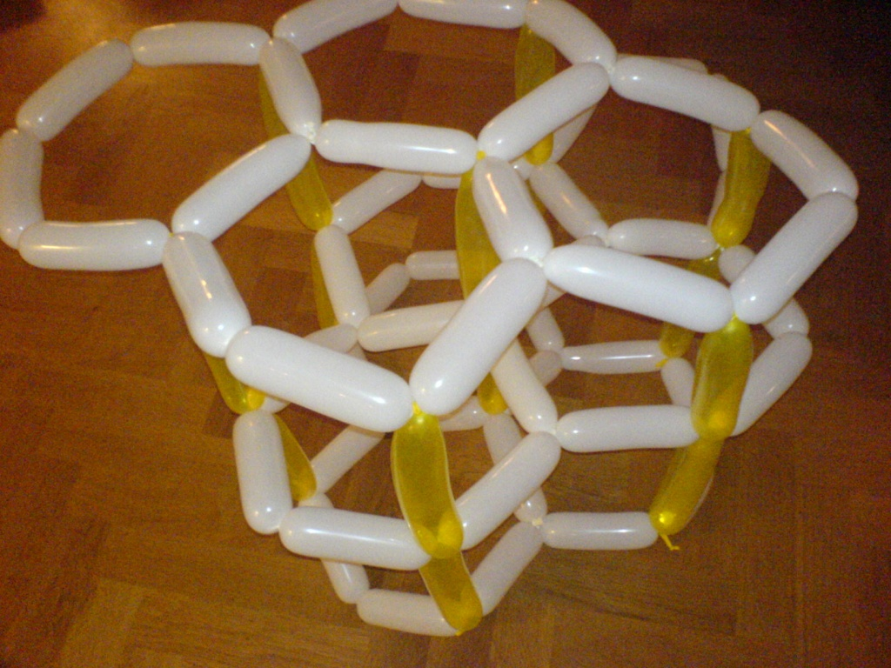
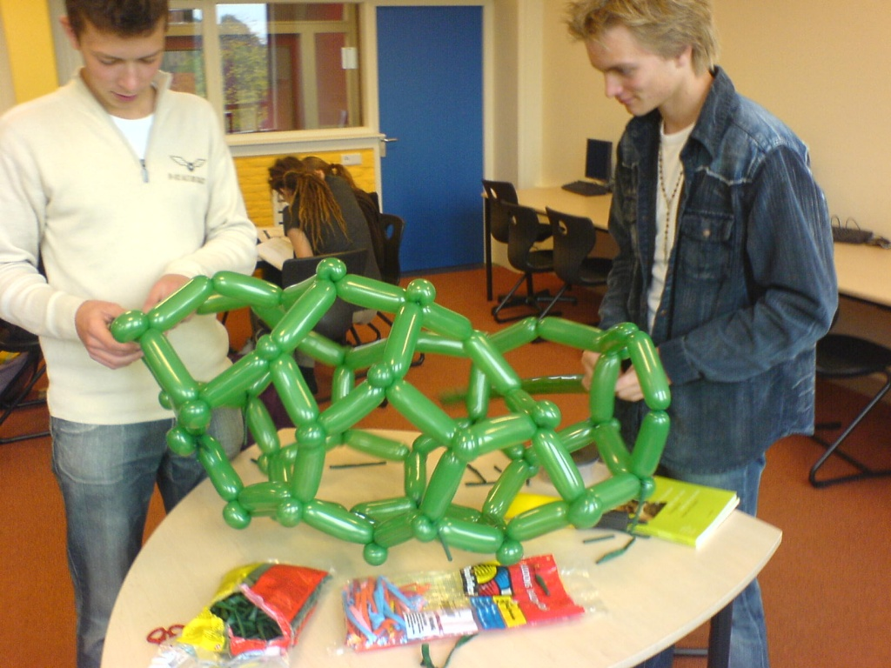
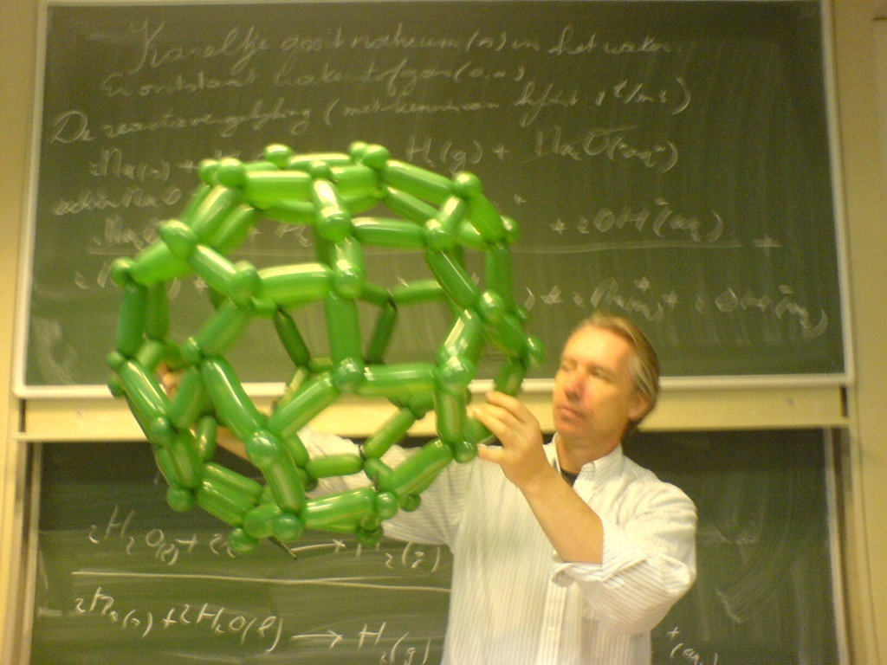
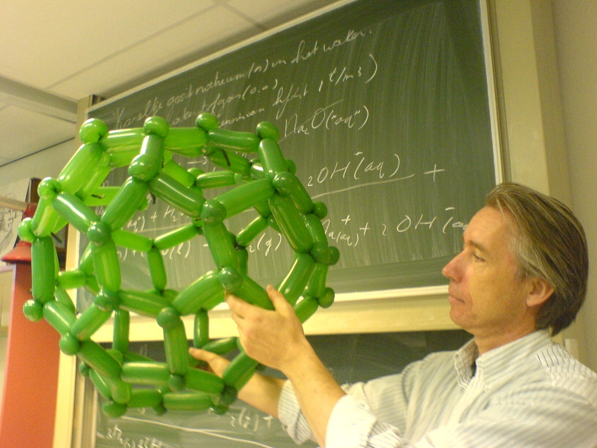
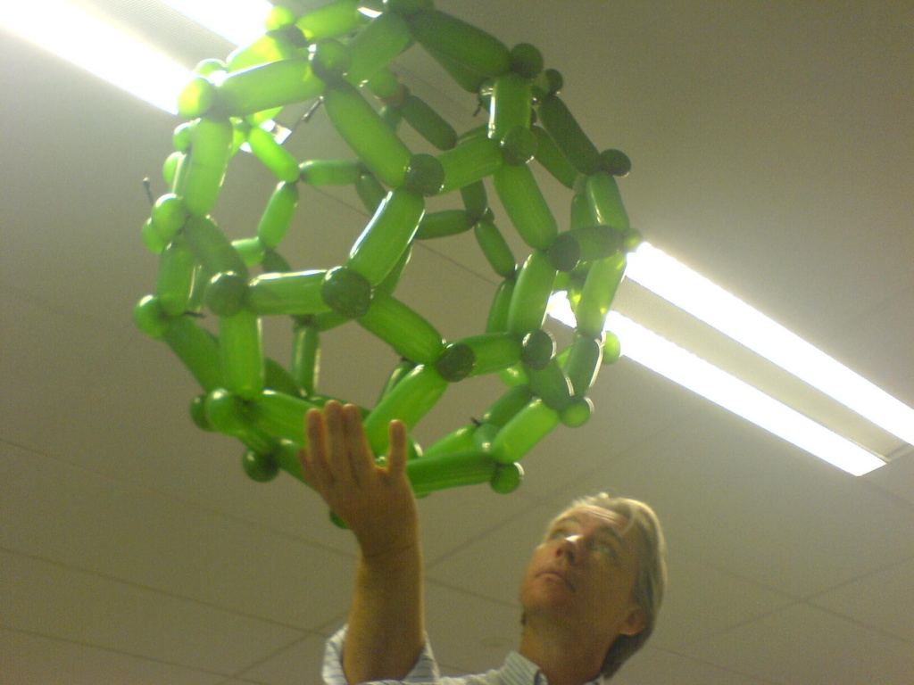

In high school I decided to make some balloon molecules after being inspired by these German guys. Here are some crappy phone pictures of the results, featuring my brother, friends, and our chemistry teacher.         